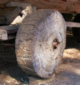

wheel

Definition: A wheel is a circular component that is intended to rotate on an axle bearing. The wheel is one of the key components of the wheel and axle which is one of the six simple machines. Wheels, in conjunction with axles, allow heavy objects to be moved easily facilitating movement or transportation while supporting a load, or performing labor in machines. Wheels are also used for other purposes, such as a ship's wheel, steering wheel, potter's wheel, and flywheel.
Source: Wikipedia
Wikipedia Page
Wikidata Page
Occurs in: